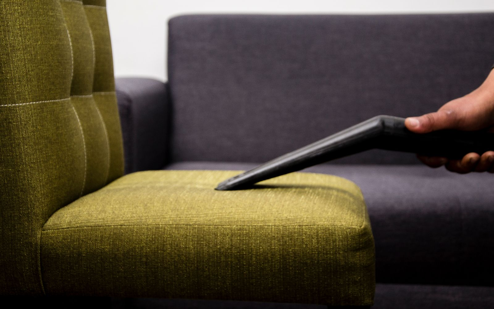
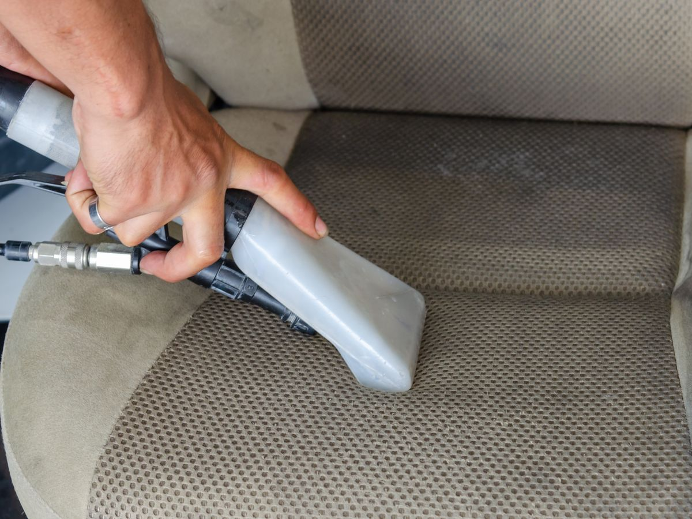

Stained, dusty chairs deep cleaned to look new again
Machine shampooing, stain removal, hot-water extraction and sanitisation for fabric, mesh and leatherette chairs. Chairs are dry and ready to use in 3-4 hours.

The right method for every material
Fabric chairs
Shampoo, extraction and stain treatment for tea, coffee, ink and sweat marks.
Mesh chairs
Dust and grime removed from the mesh weave with a gentle foam clean.
Leather / leatherette
pH-neutral cleaning and conditioning to prevent cracks.
Auditorium & cafeteria
High-volume cleaning for hundreds of seats in one visit.
A deep clean, not just a wipe
- Dry vacuum to remove dust and loose dirt from the seams.
- Pre-treatment on stains, matched to the stain type.
- Machine shampoo with fabric-safe chemicals.
- Hot-water extraction pulls out dirt and leftover shampoo.
- Sanitise & deodorise for a fresh, hygienic finish.

Quick drying
Low-moisture extraction, so chairs are back in use the same day.
Safe chemicals
Fabric-safe, low-odour products. Safe for staff and students.
Weekend & night slots
We clean when your office is closed. Zero disruption.
Chair cleaning questions
Will all stains come out?
Most food, beverage, dust and sweat stains come out fully. Old ink or dye stains usually fade a lot. We test a spot first and tell you honestly.
How often should office chairs be cleaned?
Every 6 months for regular offices, and every 3 months for high-use areas like call centres, cafeterias and hospitals. We can remind you when the next clean is due.
Can you clean and repair in the same visit?
Yes. Most bulk jobs combine cleaning and repair. It saves you time and money.